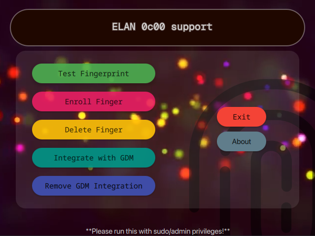

A driver like software for the ELAN 04f3:0c00 fingerprint scanner.
Please see the requirements below before proceeding.

This software has been made and tested using environments having latest Arch Linux and Cachy OS (Preferably) with Linux Kernel 7.0.11-zen1-1zen, GCC 16.1.1 20260430 and Qt 5.15.19 with Qt 6.11.1.
You need to have bash, xorg-xhost for Hyprland, and libglvnd.
sudo pacman -S bash xorg-xhost libglvnd
Note: No additional libraries of Fedora or others has been included so it won't work on the other distros leaving Arch as only option. (I have tested myself)
Use the command if you are using hyprland before running the application:
xhost +local:root
This program is designed to directly contact/communicate with your hardware using libusb-1.0 and raw hexcodes that had been captured, analyzed and optimised using Wireshark software from Windows 11. Thus making us enable to perfectly mimic the Windows driver for the hardware. So USE AT YOUR OWN RISK. ITS POSSIBLE THAT YOU LOCK YOURSELF UP MAKING YOUR COMPUTER UNUSABLE. Good luck for future!
Download the Appimage file
Run it with admin/sudo privileges.
For example-
sudo ./Elan_0c00_support-x86_64.AppImage
This project follows GPLv3 license. You can further read it on Host Website.